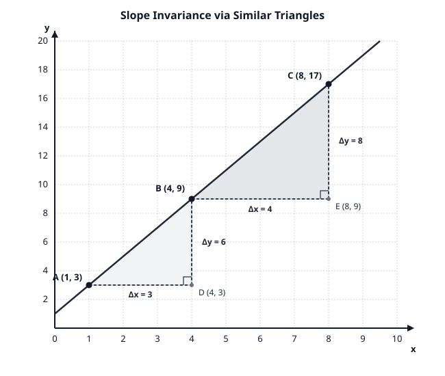
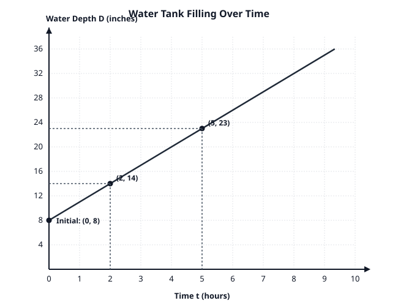

Research candidate · 20260915T023658Z-repair · Rendering preserves the original content. This preview is not classroom or print acceptance.
Feasibility Probes: Student Tasks and Teacher Guides (Repaired)
Document Context and Role:
This artifact documents the foundational mathematical feasibility probes and teacher evaluation guides developed during blueprint prototyping. In the operational Grade 8 curriculum, all live student-facing sheets and teacher guides reside in independent documents (e.g., lesson6_7_8_student_materials.md and lesson6_7_8_teacher_guides.md) to prevent inadvertent disclosure of solutions.
Section I: Feasibility Probe Tasks (Student Investigation Formats)
Task ID: PROBE-1 (Unit 2 / Unit 5 Bridge)
Topic: Slope Invariance via Similar Right Triangles
Standards: 8.G.A.5, 8.EE.B.6
Name: ____________________________________ Date: ____________ Class: _________
Background and Diagram
The coordinate graph below displays a straight line passing through points A(1,3), B(4,9), and C(8,17). Two right triangles, △ABD and △BCE, have been drawn using the line as their hypotenuse.
(Refer to Figure 1: probe1_slope_triangles.svg printed below or projected on the front board)

Questions
Find the Dimensions of Triangle 1 (△ABD):
- Horizontal leg AD: Change in x (Δx1) = ________ units
- Vertical leg DB: Change in y (Δy1) = ________ units
- Compute the vertical-to-horizontal ratio: Δx1Δy1= ________
Find the Dimensions of Triangle 2 (△BCE):
- Horizontal leg BE: Change in x (Δx2) = ________ units
- Vertical leg EC: Change in y (Δy2) = ________ units
- Compute the vertical-to-horizontal ratio: Δx2Δy2= ________
Geometric Explanation:
- Explain why △ABD is similar to △BCE (△ABD∼△BCE). Name the specific angle facts (transversals and parallel lines) that guarantee their angles are equal.
- What does the similarity of these triangles prove about the ratio horizontal changevertical change between any two points on this line?
Deriving the Equation of the Line:
- What is the y-value where the line crosses the vertical axis (x=0)?
- Using your constant slope ratio m and the vertical intercept b, write the equation of the line in the form y=mx+b.
- Verify your equation by substituting the coordinates of point C(8,17) into your equation. Show your work.
---
Task ID: PROBE-2 (Unit 5 Core Anchor)
Topic: Modeling Linear Relationships & Dismantling the y/x Misconception
Standards: 8.F.B.4, 8.F.B.5, MP2, MP4
Name: ____________________________________ Date: ____________ Class: _________
Context and Graph
A community garden uses a large rainwater storage tank. At the beginning of a community gardening session, water is pumped into the tank at a steady, constant rate.
A student measures the depth of the water at two specific times:
- At time t=2 hours, the water depth is 14 inches.
- At time t=5 hours, the water depth is 23 inches.
(Refer to Figure 2: probe2_water_tank.svg printed below or projected on the front board)

Questions
Critiquing Student Thinking:
Marcus looks at the first measurement (t=2,D=14) and says:
"The water depth is 14 inches at 2 hours, so the rate of filling is 214=7 inches per hour."
- Test Marcus's method on the second measurement (t=5,D=23). What rate does his method give?
- Does Marcus's method work for this situation? Explain why or why not.
Determining the True Rate of Change:
- How many hours passed between the first and second measurement? (Δt= ________ hours)
- How many inches did the water depth increase during that time? (ΔD= ________ inches)
- Calculate the true constant rate of change (unit rate) in inches per hour:
Rate of Change m=ΔtΔD= ________________________ inches per hour
- Write a complete sentence explaining what this number means in the context of the water tank.
Finding the Initial Value (b):
- What was the water depth in the tank at time t=0 hours (before pumping began)?
- Show how you can calculate this initial depth using your rate of change and one of the points, or by working backward.
- Initial Depth b= ________ inches.
Constructing the Function:
- Write an algebraic equation that models the water depth D (in inches) as a linear function of time t (in hours):
D= ________________________
- Use your function to predict the water depth after 8 hours.
Qualitative Analysis (8.F.B.5):
- The tank has a maximum depth of 36 inches. Once it reaches 36 inches, an automatic shut-off valve closes instantly.
- Describe what the graph of water depth over time will look like after the shut-off valve closes. Is the function still increasing? What is the slope?
---
Task ID: PROBE-3 (Unit 5 to Unit 6 Transition)
Topic: From Linear Models to Simultaneous Systems
Standards: 8.F.B.4, 8.EE.C.8.a, 8.EE.C.8.c
Name: ____________________________________ Date: ____________ Class: _________
Context
Two students, Elena and Jaden, are saving money from their summer jobs:
- Elena starts with $40 in her savings account and deposits $15 each week.
- Jaden starts with $100 in his savings account and deposits $10 each week.
Questions
Constructing the Functions:
- Let w represent the number of weeks, and S represent total savings in dollars.
- Elena's savings function: SE= ________________________
- Jaden's savings function: SJ= ________________________
Comparing Properties (8.F.A.2):
- Who is saving money at a faster rate? How do you know from the equations?
- Who had more money at the start? How do you know from the equations?
Finding the Break-Even Point (8.EE.C.8):
- Set up an equation to find the number of weeks w when Elena and Jaden will have exactly the same amount of money saved:
[Elena’s Savings]=[Jaden’s Savings]
- Solve the equation for w. Show every algebraic step.
- How many weeks will it take? w= ________ weeks.
- How much money will each student have at that time? Total Savings = ________ dollars.
Graphical Interpretation:
- If Elena's and Jaden's functions are graphed on the same coordinate plane, what does the point (12,220) represent?
Section II: Teacher Answer Keys and Evaluation Guides
Teacher Guide: Task PROBE-1
Mathematical Solutions
- Dimensions of △ABD:
- Δx1=4−1=3 units.
- Δy1=9−3=6 units.
- Ratio: Δx1Δy1=36=2.
- Dimensions of △BCE:
- Δx2=8−4=4 units.
- Δy2=17−9=8 units.
- Ratio: Δx2Δy2=48=2.
- Geometric Explanation:
- Angle Equality: Both triangles have a right angle (∠ADB=∠BEC=90∘) because the legs are parallel to the perpendicular coordinate axes. The line acts as a transversal intersecting horizontal lines y=3 and y=9. Corresponding angles ∠DAB and ∠EBC are congruent.
- AA Similarity: By Angle-Angle (AA) similarity criterion (8.G.A.5), △ABD∼△BCE.
- Conclusion: Corresponding side lengths of similar triangles are proportional: ADDB=BEEC⟹36=48=2. Therefore, the ratio of vertical change to horizontal change is invariant between any two points on the line.
- Derivation of Equation:
- At x=0, y=3−2(1)=1. The vertical intercept is (0,1), so b=1.
- Equation: y=2x+1.
- Verification with C(8,17): Substitute x=8: y=2(8)+1=16+1=17. The equation holds true.
Diagnostic Matrix for Teacher Observation
| Student Response Pattern |
Underlying Misconception |
Targeted Instructional Intervention |
| Inverts ratio (ΔyΔx=63=0.5) |
Confusing horizontal and vertical change; thinking of (x,y) coordinate order (x first). |
Re-anchor with "rise over run": vertical change on top because slope measures vertical steepness per horizontal step. |
| Counts grid intervals incorrectly |
Misreading coordinate grid boundaries or subtracting in inconsistent direction (x2−x1 vs. x1−x2). |
Require students to write coordinate pairs explicitly above calculations: (x1,y1) and (x2,y2). |
| Claims triangles are similar only because "they look the same" |
Weak formal geometric justification; unaware of transversal and AA similarity criteria. |
Revisit Unit 2 Lesson on parallel lines cut by transversals; physically highlight corresponding angles. |
Teacher Guide: Task PROBE-2
Mathematical Solutions
- Critiquing Marcus's Thinking:
- Second point rate: 523=4.6 inches per hour.
- Marcus's method fails because 214=7=4.6=523. In a relationship with a non-zero starting value (b=0), dividing a single y-value by its x-value computes the slope of the secant line from the origin (0,0) to that point, NOT the rate of change of the line itself.
- True Rate of Change:
- Time elapsed: Δt=5−2=3 hours.
- Depth increase: ΔD=23−14=9 inches.
- Rate of Change: m=ΔtΔD=3 hours9 inches=3 inches per hour.
- Contextual Sentence: "The water depth in the tank increases by 3 inches for every additional hour of pumping."
- Finding Initial Value:
- At t=2, depth is 14 inches. Pumping contributed 3 in/hr×2 hr=6 inches.
- Initial depth: b=14−6=8 inches (or using D=mt+b⟹23=3(5)+b⟹b=23−15=8).
- Constructing the Function:
- Equation: D=3t+8.
- Prediction at t=8: D=3(8)+8=24+8=32 inches.
- Qualitative Analysis (8.F.B.5):
- When the shut-off valve closes at D=36 inches (3t+8=36⟹3t=28⟹t=931 hours), the depth stops increasing and remains constant at 36 inches.
- The graph becomes a horizontal line segment (m=0).
Diagnostic Matrix for Teacher Observation
| Student Response Pattern |
Underlying Misconception |
Targeted Instructional Intervention |
| Computes 5−223−14=39=3, but writes D=3t+14 |
Assumes the first recorded point is the "initial value" at t=0. |
Point out that the first observation was recorded at t=2, not t=0. Direct student to extrapolate backward 2 hours on the graph. |
| Writes D=8t+3 |
Swapping the roles of slope m (rate) and vertical intercept b (initial value). |
Ask student: "If no time passes (t=0), does your equation give 8 inches or 3 inches?" |
| Claims the rate cannot be found because numbers don't increase by 1 hour |
Relies purely on unit table patterns; unable to compute difference quotients. |
Scaffold with rate-of-change formula table: column for Δt, column for ΔD, and quotient column ΔtΔD. |
Teacher Guide: Task PROBE-3
Mathematical Solutions
- Savings Functions:
- Elena: SE=15w+40.
- Jaden: SJ=10w+100.
- Comparing Properties:
- Elena is saving faster because her rate of change (slope) is $15/week, compared to Jaden's $10/week (15>10).
- Jaden started with more money because his initial value (y-intercept) is $100, compared to Elena's $40 (100>40).
- Break-Even Point:
- Equating expressions: 15w+40=10w+100.
- Subtract 10w from both sides: 5w+40=100.
- Subtract 40 from both sides: 5w=60.
- Divide by 5: w=12 weeks.
- Calculate total savings: SE=15(12)+40=180+40=$220. (SJ=10(12)+100=120+100=$220).
- Graphical Meaning:
- (12,220) is the point of intersection of the two lines. It represents the exact moment in time (Week 12) when both Elena and Jaden have identical savings balances ($220).